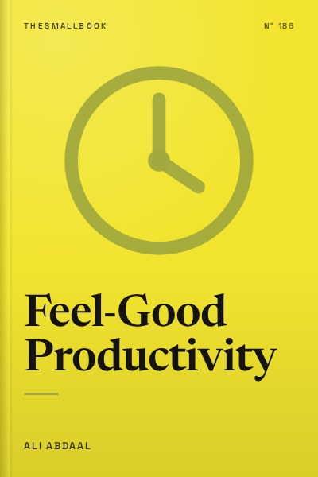

Library › Productivity
Feel-Good Productivity - Summary & Key Lessons

Productivity is not about discipline. It is about feeling good, and feeling good makes you productive.
📖 OPEN THE FULL INTERACTIVE BREAKDOWN →🌐 Read it in Hindi, Hinglish, Gujarati, Tamil & 22 more languages, with audio.
💡 The Big Idea
Most productivity advice assumes you need more discipline. Ali Abdaal, a doctor turned YouTuber, argues the opposite: feeling good is the engine of productivity, not the reward for it. Positive emotions broaden our thinking and energise us, while stress and dread shrink our focus. The book is organised in three parts. First, energise: bring play, power and people into your work. Second, unblock: deal with uncertainty, fear and inertia, the real reasons we procrastinate. Third, sustain: avoid burnout by aligning work with your values and resting properly. The result is a kinder, more sustainable way to get things done.
🧠 The 9 Key Lessons
Lesson 1: Feeling Good Fuels Doing Well
Introduction: The Feel-Good Approach
Abdaal builds on research by psychologist Barbara Fredrickson, whose 'broaden and build' theory shows that positive emotions widen our attention and help us build skills, relationships and resilience. Stress narrows focus to immediate threats, which is useful in emergencies but bad for creative or complex work. If you want to be productive over the long term, make your work feel good. This is not about forced positivity; it is about designing tasks and environments that give you energy instead of draining it.
📖 Example: Abdaal describes his time as a junior doctor in the UK, juggling long hospital shifts with building a YouTube channel. He noticed he got more done on days when he enjoyed what he was doing, and less when he forced himself through work with guilt and willpower. Read the full example →
⚡ Do this: List your tasks for tomorrow. Next to each, write how it makes you feel (energised, neutral, drained). For one draining task, think of a way to make it more enjoyable.
Lesson 2: Play: Approach Work With Curiosity
Chapter 1: Play
Adults often treat play as the opposite of work. Abdaal argues that a playful mindset is one of the strongest energisers. Play means approaching tasks with curiosity, lightness and a willingness to experiment. You can add play by giving yourself a character (imagine you are an adventurer, not a worker), by turning tasks into games, and by lowering the stakes so mistakes become part of the fun. Play also reduces fear of failure, which is often what stops us from starting.
📖 Example: Abdaal cites physicist Richard Feynman, who burned out early in his career and recovered by deciding to do physics just for fun. He started analysing a wobbling plate in a cafeteria purely out of curiosity, and that playful work eventually contributed to the research that won him a Nobel Prize. Read the full example →
⚡ Do this: Pick one task you have been avoiding. Turn it into a game: set a timer, give yourself points, or pretend you are explaining it to a curious child.
Lesson 3: Power: Build Confidence Through Small Wins
Chapter 2: Power
Feeling capable, what psychologists call self-efficacy, is a powerful energiser. When we believe we can do something, we try harder and persist longer. Abdaal suggests building this feeling by breaking tasks into tiny steps, learning from people who have done it, and adopting a confidence mindset of acting 'as if.' He also highlights the 'protégé effect': teaching someone else increases your own competence and confidence.
📖 Example: Abdaal recounts how, early on, he felt insecure about making videos. By making short, simple videos and gradually improving, he built evidence that he could do it. Teaching what he learned in his videos also deepened his own understanding of medicine and productivity. Read the full example →
⚡ Do this: Break your biggest current task into five tiny steps. Complete the first step today and write down the win.
Lesson 4: People: Work Is Better Together
Chapter 3: People
Humans are social, and connection is a strong source of energy. Abdaal recommends finding colleagues, friends or online communities who share your goals, doing work side by side even if you are working on different things, and practising kindness, which boosts your own mood. Feeling part of a team creates a sense of shared purpose that makes even difficult work feel lighter.
📖 Example: Abdaal describes virtual 'co-working' sessions, where people work silently on video calls together. Many people report that just knowing others are working alongside them helps them focus and start tasks they had been avoiding. Read the full example →
⚡ Do this: Schedule one co-working session this week with a friend or online group. Agree on what each person will work on and check in at the end.
Lesson 5: Clarity: Remove Uncertainty
Chapter 4: Seek Clarity
One of the main reasons we procrastinate is uncertainty: we do not know exactly what to do next. Abdaal suggests asking 'Why am I doing this?' and 'What exactly is the next step?' He recommends the 'commander's intent' idea from the military, understanding the purpose behind a task so you can adapt when plans change, and using clear, specific goals such as 'write 200 words' instead of 'work on essay.'
📖 Example: Military units are given the commander's intent, the purpose of a mission, rather than rigid instructions. When conditions change, soldiers can adapt while still achieving the goal. Abdaal applies this to daily work: knowing why a task matters lets you decide how to do it. Read the full example →
⚡ Do this: For your most important task this week, write one sentence about why it matters and one sentence describing the very next physical action.
Lesson 6: Courage: Fear Shrinks When You Name It
Chapter 5: Find Courage
Fear of failure, judgment or not being good enough often blocks progress. Abdaal suggests naming the fear explicitly, which reduces its power, and reframing it as excitement, since both share similar physical sensations. He also recommends 'fear-setting,' a technique popularised by Tim Ferriss: writing down the worst-case scenario, how to prevent it and how to recover if it happens.
📖 Example: Abdaal describes his anxiety before leaving medicine to focus on YouTube full-time. He wrote down the worst outcomes, such as the channel failing, and realised he could return to medicine if needed. Seeing it on paper made the fear manageable. Read the full example →
⚡ Do this: Write down your biggest fear about a current goal. Next to it, write how you would prevent it and how you would recover if it happened.
Lesson 7: Starting: Lower the Barrier to Begin
Chapter 6: Get Started
Inertia, the difficulty of beginning, is a major productivity blocker. Abdaal suggests reducing friction to start: use the five-minute rule (commit to just five minutes), prepare your environment in advance, and track progress to create momentum. Once you begin, it is usually easier to continue. He also encourages forgiving yourself for procrastination, because self-compassion makes you more likely to try again.
📖 Example: Research on procrastination shows that students who forgave themselves after procrastinating on one exam procrastinated less on the next. Abdaal uses this to argue that kindness, not self-criticism, helps break the cycle. Read the full example →
⚡ Do this: Tonight, prepare your workspace for tomorrow's first task: open the document, place the book on the desk, lay out the clothes. Then commit to just five minutes.
Lesson 8: Energy Management: Avoid Overexertion
Chapter 7: Conserve
Burnout is not just about working long hours; it is about chronic stress without recovery. Abdaal identifies three types of burnout: overexertion, depletion and misalignment. To avoid overexertion, he suggests working in focused bursts with breaks, saying no more often, and protecting rest time. Rest is not a reward for finishing work; it is part of the work.
📖 Example: Abdaal describes how, as a doctor, he often pushed through exhaustion and noticed his decision-making suffered. Later, he began scheduling rest and found his creative work improved. Read the full example →
⚡ Do this: Look at your schedule for next week and block at least two periods of real rest (no screens, no work) of 30 minutes or more.
Lesson 9: Recharge and Align
Chapters 8 and 9: Recharge and Align
Depletion burnout comes from not recharging: too little sleep, exercise, time in nature or creative play. Misalignment burnout comes from doing work that conflicts with your values. Abdaal recommends regular recharging activities and periodic reflection on whether your work aligns with what you care about. He suggests imagining your life a year or five years from now and asking what you would want to have done.
📖 Example: Abdaal shares how he regularly reflects on whether his work still aligns with his values, using journaling and conversations with friends. When something no longer feels right, he adjusts his projects rather than forcing himself to continue. Read the full example →
⚡ Do this: Write down three values that matter most to you. Check whether your current main project supports them. If not, identify one change to bring them closer.
✅ 5-Step Action Plan
- Mark tomorrow's tasks as energising, neutral or draining, and redesign one draining task.
- Turn one avoided task into a game with a timer or points.
- Schedule a co-working session with a friend this week.
- Do a fear-setting exercise for one goal you are scared of.
- Block two real rest periods in your calendar next week.
⚠️ When This Doesn't Work
Abdaal's ideas work best for people with some freedom over their work. In jobs with strict hierarchies or exam-heavy courses, you cannot always make tasks fun. Some tasks are simply boring and must be done. Use the book to make what you can more enjoyable, but do not feel like a failure if some days still require plain discipline.
💀 The Graveyard Proves It
💬 Best Quotes from Feel-Good Productivity
- “Feeling good is not the result of productivity. It is the cause of it.”
- “The secret to productivity is not discipline. It is enjoyment.”
- “When we feel good, we do more.”
Interactive version: mark lessons as read, listen in your language, share quote cards.